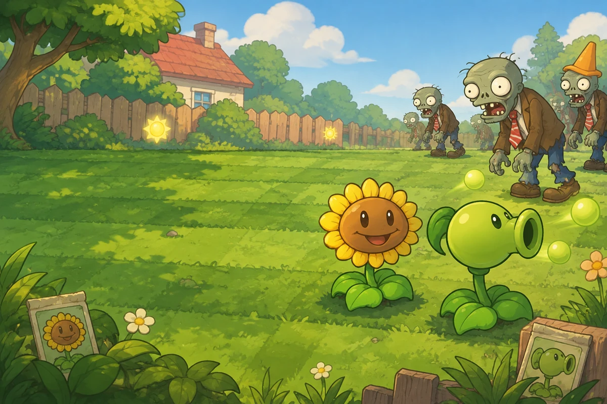
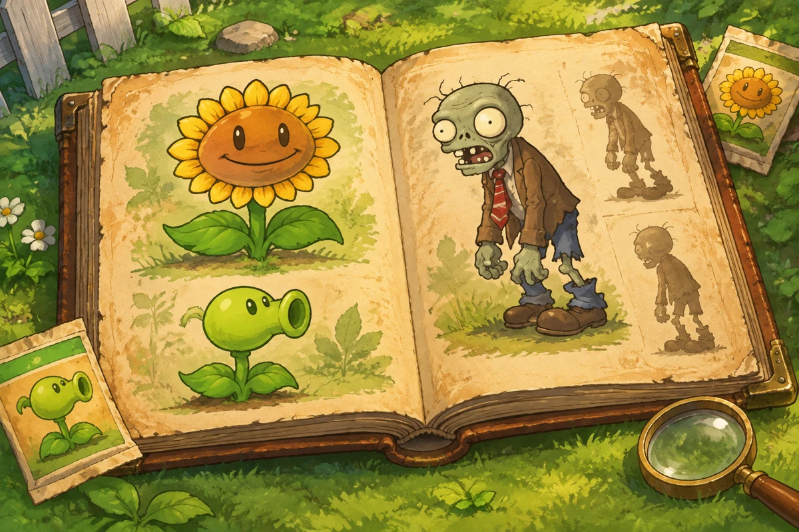
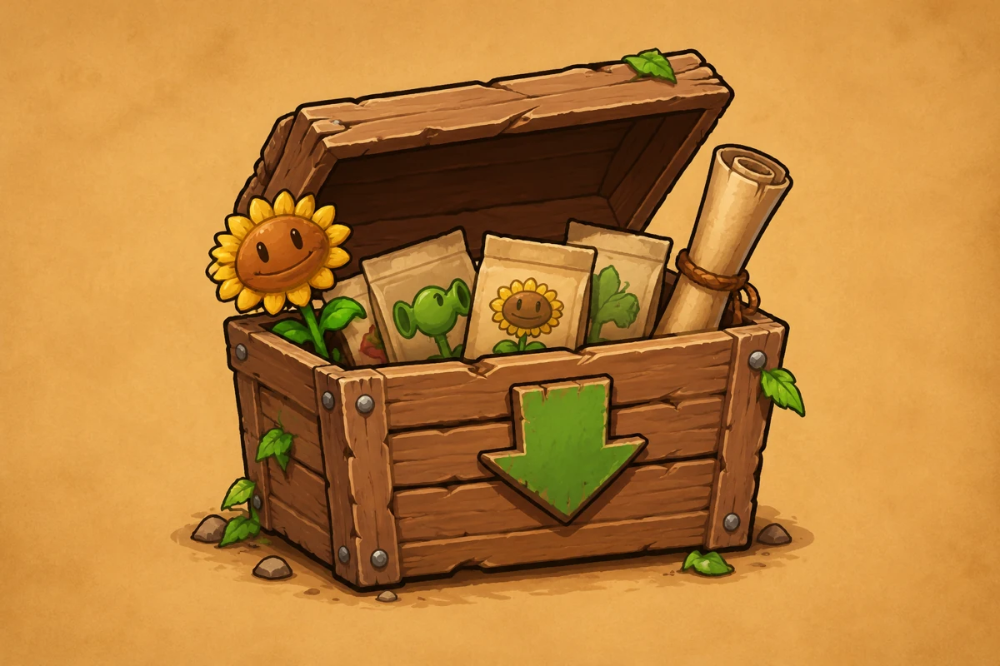

PLANTS VS. ZOMBIES TV
对战资料站
V3215 对战统计与植物、僵尸卡牌资料

BATTLE DATA 草坪战报对局记录 · 卡组趋势
对战大数据
查看 Top 10 卡组、单卡表现与最近对局。

PLANT & ZOMBIE ALMANACV3215 · 植物与僵尸
图鉴
查阅卡牌费用、恢复时间、战斗数据与描述。

GAME DOWNLOADS
游戏下载
选择常用网盘，获取游戏安装包。
百度网盘 · 夸克网盘 · 阿里云盘 · 123 云盘